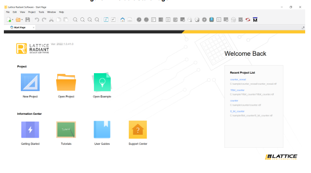

Running the Radiant Software This topic describes how to run the Radiant software. To run the Radiant software, follow these steps: Download the software from the Lattice software web page and install the software. Select Radiant Software from the installation location. The default Start page appears, as shown in Figure 1. Figure 1. Figure 1. Default Start Page  Related tasksCreating a New Project